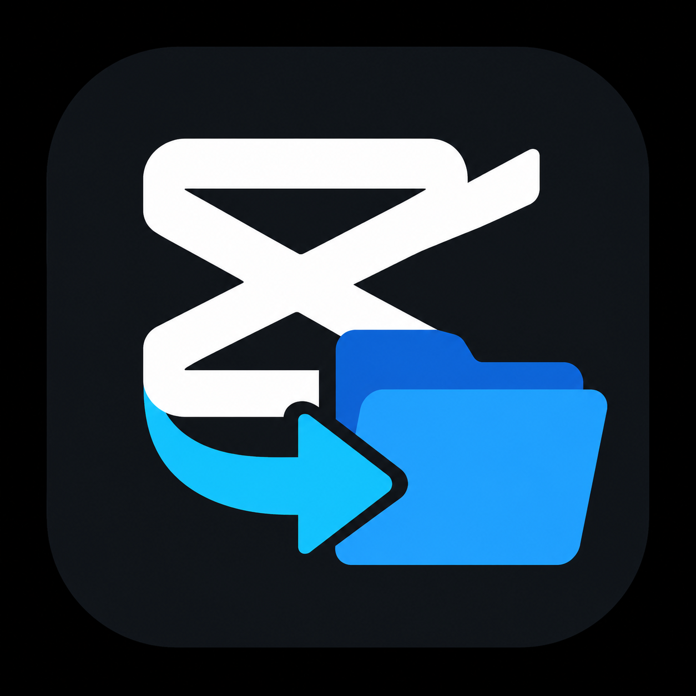

ZIP archive
Choose a .zip collection. Older .capcollect packages are also supported.

Your project. Every file. Ready to share.
Loading projects…
Import a project and its media to this computer.
Choose a .zip collection. Older .capcollect packages are also supported.
Choose the collection containing the _project folder, Assets, and instructions.
Collect creates a new project in your CapCut library and updates media paths. Restart CapCut if the list does not refresh.
Experimental panel for CapCut 9.6.0.4097. Save and close projects and leave the home screen visible before enabling.